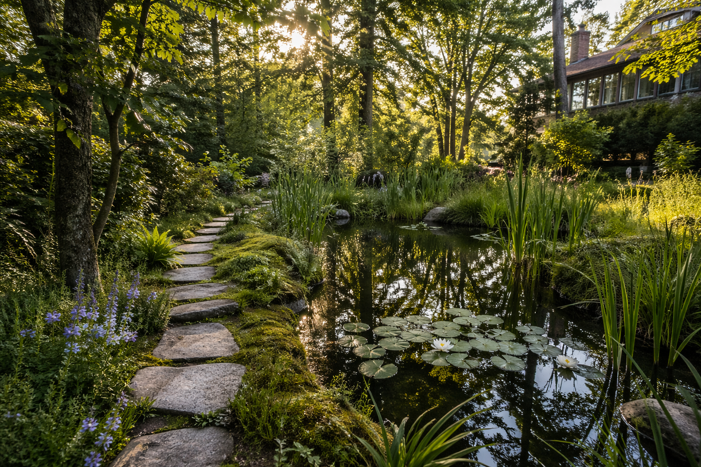

El agua como parte
del paisaje
Diseñamos lagunas, humedales y sistemas hídricos que pertenecen al lugar.
¿Te identificas?
Quieres diseñar una laguna, resolver el drenaje, el agua potable o el saneamiento.
Necesitas estudios base, gestión de riesgo hídrico o documentación técnica para permisos.
Tienes caminos que se destruyen cada invierno, sectores inundables o pozos con baja producción.
Quieres saber cómo se comporta el agua antes de firmar: restricciones, oportunidades y riesgos reales.
Necesitas agua disponible y drenaje funcional para operar sin interrupciones.
Buscas diagnóstico, diseño o revisión técnica de sistemas de agua potable rural o drenaje urbano.
Servicios
Lagunas, Humedales
y Piscinas Naturales
Diseñamos sistemas hídricos que integran el agua al paisaje del predio. El resultado eleva el valor del lugar y funciona con el territorio, no contra él.
Drenaje predial
y aguas lluvias
Diseñamos sistemas de drenaje duraderos para predios y parcelaciones. Caminos protegidos, suelos secos y escorrentía controlada durante todo el invierno.
Seguridad hídrica
y abastecimiento
Evaluamos la disponibilidad real del predio — pozos, vertientes y captaciones — y diseñamos el sistema que garantiza agua de calidad en todas las estaciones.
Saneamiento
particular
Definimos la solución sanitaria correcta según el suelo y el uso del predio: bien ubicada, bien dimensionada y sin problemas de operación a largo plazo.
Estudios hidrológicos
y riesgo hídrico
Análisis técnico de caudales, inundaciones y amenazas hídricas. Información precisa para tomar decisiones de inversión y obtener permisos con respaldo sólido.
Revisión técnica
y asesoría
Evaluamos proyectos existentes, revisamos informes y emitimos una segunda opinión independiente. Útil antes de invertir, comprar un terreno o iniciar una obra.
Cuéntanos tu proyecto
Una conversación inicial es suficiente para orientarte.
Escríbenos
Trabajamos de forma remota en todo Chile.
Visitas a terreno según requerimiento del proyecto.